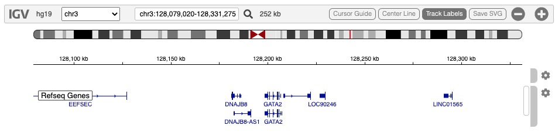
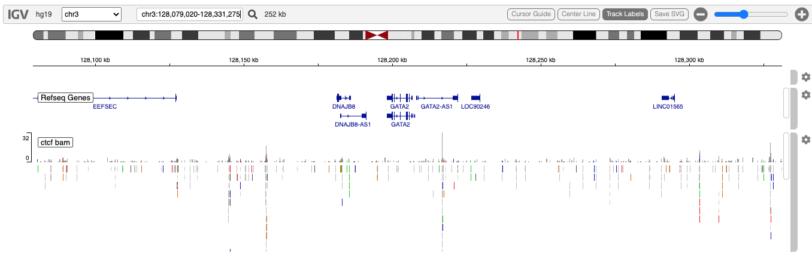
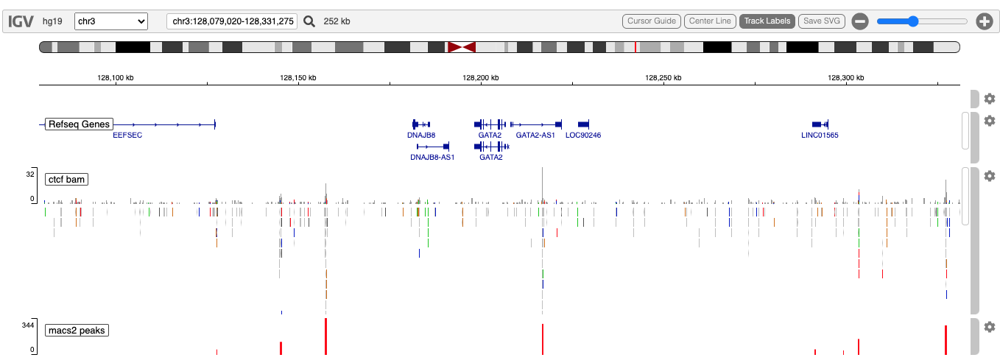
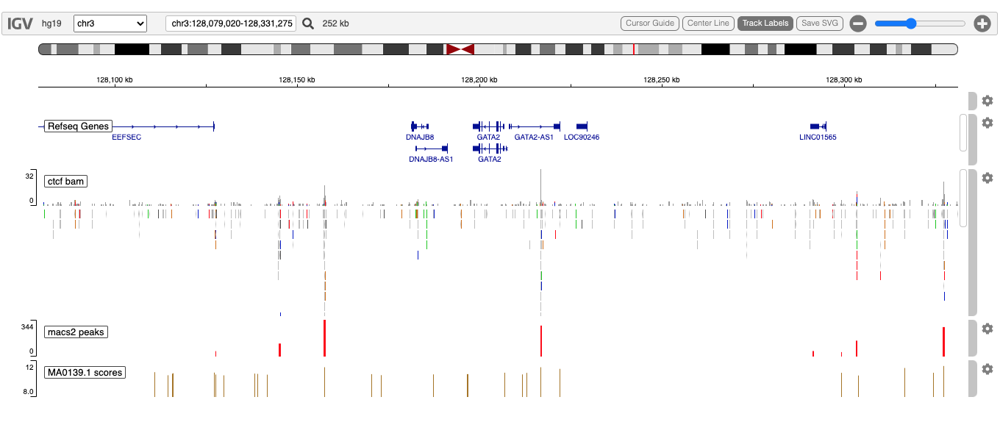

Explore CTCF ChIP-seq alignments, MACS2 narrowPeaks, Motif Matching and H3K4me3 methylation
Paul Shannon
2022-08-05
v03.ctcfChIP.RmdOverview
The igvR package provides easy programmatic access in R to the web-based javascript library igv.js. R’s access to data, and operations upon data, are complemented by igv’s richly interactive web browser interface to display and explore genomic and epigentic data.
In this vignette we present a somewhat contrived ChIP-seq study - contrived in that it is not organized around an actual research problem. Instead, this vignette demonstrates methods you would likely use to do visual QC and exploratory data analysis of ChIP-seq data, for CTCF, a protein which plays multiple roles in gene regulation in the vicinity of a gene of interest, GATA2.
We begin with ENCODE data of CTCF binding on chromosome 3, on the hg19 reference genome, in the vicinity of the GATA2 gene. We will
- Display a 252 kb region of that genome
- Read the indexed bam file into a GenomicAlignments object covering that region, and display it
- Load and display a narrow peaks bedGraph track, precalculated by MACS2 processing of the bam file
- Use the Biostrings::matchPWM method to identify regions in the displayed sequence which, with at least 80% fidelity, match the CTCF motif, Jaspar 2018’s MA0138.1, from MotifDb
- Display those scored motif matches
- Load and display H3K4me3 histone marks from a bigwig file
- Zoom in on a likely functional CTCF binding site downstream of GATA2, as suggested by these combined data
Initialize igvR
library(igvR)
igv <- igvR()
setBrowserWindowTitle(igv, "CTCF ChIP-seq")
setGenome(igv, "hg19")
showGenomicRegion(igv, "chr3:128,079,020-128,331,275")
# or
showGenomicRegion(igv, "GATA2")
for(i in 1:4) zoomOut(igv)
Load alignments for the currently displayed genomic region
A modest but often useful feature of igvR is R access to the currently displayed genomic region. In the previous step we showed to ways to set the region programatically from R. This may not get you exactly the region you are interested in, so interactive adjustment in the browser can fine tune your region of interest (“roi”). Once that is set, retrieve the roi, create a GRanges object from it to use to read only the relevant slice of the bam file.
roi <- getGenomicRegion(igv)
gr.roi <- with(roi, GRanges(seqnames=chrom, ranges = IRanges(start, end)))
param <- ScanBamParam(which=gr.roi, what = scanBamWhat())
bamFile <- system.file(package="igvR", "extdata", "ctcf-gata2", "gata2-region-hg19.bam")
alignments <- readGAlignments(bamFile, use.names=TRUE, param=param)Display the alignment
igvR provides a number of tracks, each with a constructor, each which then is displayed in igv with the same general purpose function. These are some of the currently supported tracks:
- BedpeInteractionsTrack
- DataFrameAnnotationTrack
- DataFrameQuantitativeTrack
- GFF3Track
- GRangesAnnotationTrack
- GRangesQuantitativeTrack
- GWASTrack
- GWASUrlTrack
- GenomicAlignmentTrack
- RemoteAlignmentTrack
- UCSCBedAnnotationTrack
- UCSCBedGraphQuantitativeTrack
- VariantTrack
track <- GenomicAlignmentTrack(trackName="ctcf bam", alignments, visibilityWindow=10000000, trackHeight=200)
displayTrack(igv, track)
Narrow Peaks from MACS
MACS is a popular peak-caller, summarizing piled-up DNA reads into narrow peaks. This operation sacrifices detail, and is subject to run-time parameterization choices, but is nonetheless quite useful. By examinging these narrow peaks and the raw reads together in igvR, the benefits of detail and summary are both achieved.
The DataFrameQuantitativeTrack requires a data.frame with the columns and classes shown here:
narrowPeaksFile <- system.file(package="igvR", "extdata", "ctcf-gata2",
"gata2-region-macs2-narrowPeaks.RData")
tbl.pk <- get(load(narrowPeaksFile))
dim(tbl.pk) # 109 4
head(tbl.pk)
# chrom start end score
# 6381 chr10 127910682 127910864 27
# 6382 chr10 128075644 128075811 89
# 6383 chr10 128259852 128259984 27
# 6384 chr10 128286655 128286920 78
# 6385 chr10 128437706 128437938 89
# 8827 chr11 127965327 127965489 70
unlist(lapply(tbl.pk, class))
# chrom start end score
# "character" "integer" "integer" "integer"
track <- DataFrameQuantitativeTrack("macs2 peaks", tbl.pk, color="red", autoscale=TRUE)
displayTrack(igv, track)
Motif Matching
Transcription factor binding sites are often characterized by sequence match to the TF’s curated motif. We will use this motif from JASPAR 2022 and identify matches in the hg19 genome in our region of interest.

# get the DNA sequence in the current region
dna <- with(roi, getSeq(BSgenome.Hsapiens.UCSC.hg19, chrom, start, end))
# get the first of three motifs for CTCF. (a more thorough study would use all three)
pfm.ctcf <- MotifDb::query(MotifDb, c("CTCF", "sapiens", "jaspar2022"), notStrings="ctcfl")
motif.name <- names(pfm.ctcf)[1]
pfm <- pfm.ctcf[[1]]
# Find matches >= 80% of this motif in the sequence. create a suitable
# data.frame for another DataFrameQuantitativeTrack
hits.forward <- matchPWM(pfm, as.character(dna), with.score=TRUE, min.score="80%")
hits.reverse <- matchPWM(reverseComplement(pfm), as.character(dna), with.score=TRUE, min.score="80%")
tbl.forward <- as.data.frame(ranges(hits.forward))
tbl.reverse <- as.data.frame(ranges(hits.reverse))
tbl.forward$score <- mcols(hits.forward)$score
tbl.reverse$score <- mcols(hits.reverse)$score
tbl.matches <- rbind(tbl.forward, tbl.reverse)
tbl.matches$chrom <- roi$chrom
tbl.matches$start <- tbl.matches$start + roi$start
tbl.matches$end <- tbl.matches$end + roi$start
tbl.matches$name <- paste0("MotifDb::", motif.name)
tbl.matches <- tbl.matches[, c("chrom", "start", "end", "name", "score")]
dim(tbl.matches) # 25 5
head(tbl.matches)
# chrom start end name score
# 1 chr3 128110910 128110928 MotifDb::Hsapiens-jaspar2018-CTCF-MA0139.1 10.70369
# 2 chr3 128114573 128114591 MotifDb::Hsapiens-jaspar2018-CTCF-MA0139.1 10.36891
# 3 chr3 128127658 128127676 MotifDb::Hsapiens-jaspar2018-CTCF-MA0139.1 10.44666
# 4 chr3 128138376 128138394 MotifDb::Hsapiens-jaspar2018-CTCF-MA0139.1 10.54861
# 5 chr3 128139280 128139298 MotifDb::Hsapiens-jaspar2018-CTCF-MA0139.1 10.51689
# 6 chr3 128173128 128173146 MotifDb::Hsapiens-jaspar2018-CTCF-MA0139.1 10.37987Display the Matches
This will show that there are many more potential binding sites, based on sequence alone, that is indicated by ChIP.
track <- DataFrameQuantitativeTrack("MA0139.1 scores", tbl.matches[, c(1,2,3,5)],
color="random", autoscale=FALSE, min=8, max=12)
displayTrack(igv, track)
H3K4Me3 Histone Marks
Methylation at the 4th lysine of histone H3 can correlate with transcrition factor binding nearby. Here we read and load an H3k4Me3 track from the same GM12878 lymphoblastoid cells from which the CTCF ChIP-seq was obtained.
The Bioconductor AnnotationHub is one possible source for this H3K4Me3 data. We obtained this track, AH40294 | E116-H3K4me3.imputed.pval.signal.bigwig, and then for convenience sliced out a region of intererest and saved as a bigwig file in extdata/ctcf-gata2 directory of the igvR package.
We use here the GRangesQuantitativeTrack, which is very like the DataFrameQuantitativeTrack used above, but specialized for GRanges rather than bed-like data.frames.
roi <- getGenomicRegion(igv)
bigwig.file <- system.file(package="igvR", "extdata", "ctcf-gata2", "gata2-region-h3k4me3.bw")
bw.slice <- import(bigwig.file, which=gr.roi)
track <- GRangesQuantitativeTrack("h3k4me3", bw.slice, autoscale=TRUE)
displayTrack(igv, track)
Zoom in to one interesting, and possibly functional CTCF binding site
This is most easily, and most naturally accomplished with your mouse in the web browser, by dragging a region in the spece between the cytoband and the sequence ruler, producing the zoomed in view which can also be obtained programmatically:
showGenomicRegion(igv, "chr3:128,202,505-128,222,868")You can see that the ChIP-seq evidence supports CTCF binding, with additional support from motif match and H3K4Me3. There is no ChIP-seq support for the upstream site, despite motif match and H3K4Me3 binding.